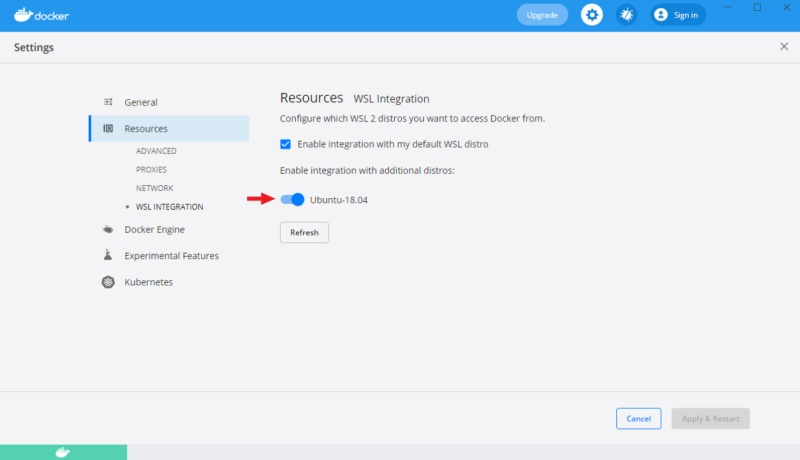

Serverless tutorial
Introduction
Computers have now become our partners. They help us to solve routine problems, fix mistakes, find information, etc. It is a natural idea to use their compute power to annotate datasets. There are multiple DL models for classification, object detection, semantic segmentation which can do data annotation for us. And it is relatively simple to integrate your own ML/DL solution into CVAT.
But the world is not perfect and we don’t have a silver bullet which can solve all our problems. Usually, available DL models are trained on public datasets which cannot cover all specific cases. Very often you want to detect objects which cannot be recognized by these models. Our annotation requirements can be so strict that automatically annotated objects cannot be accepted as is, and it is easier to annotate them from scratch. You always need to keep in mind all these mentioned limitations. Even if you have a DL solution which can perfectly annotate 50% of your data, it means that manual work will only be reduced in half.
When we know that DL models can help us to annotate data faster, the next question is how to use them? In CVAT all such DL models are implemented as serverless functions for the Nuclio serverless platform. And there are multiple implemented functions which can be found in the serverless directory such as Mask RCNN, Faster RCNN, SiamMask, Inside Outside Guidance, Deep Extreme Cut, etc. Follow the installation guide to build and deploy these serverless functions. See the user guide to understand how to use these functions in the UI to automatically annotate data.
What is a serverless function and why is it used for automatic annotation in CVAT? Let’s assume that you have a DL model and want to use it for AI-assisted annotation. The naive approach is to implement a Python script which uses the DL model to prepare a file with annotations in a public format like MS COCO or Pascal VOC. After that you can upload the annotation file into CVAT. It works but it is not user-friendly. How to make CVAT run the script for you?
You can pack the script with your DL model into a container which provides a standard interface for interacting with it. One way to do that is to use the function as a service approach. Your script becomes a function inside cloud infrastructure which can be called over HTTP. The Nuclio serverless platform helps us to implement and manage such functions.
CVAT supports Nuclio out of the box if it is built properly. See the installation guide for instructions. Thus if you deploy a serverless function, the CVAT server can see it and call it with appropriate arguments. Of course there are some tricks how to create serverless functions for CVAT and we will discuss them in next sections of the tutorial.
Using builtin DL models in practice
In the tutorial it is assumed that you already have the cloned
CVAT GitHub repo.
To build CVAT with serverless support you need to run docker-compose command
with specific configuration files. In the case it is docker-compose.serverless.yml.
It has necessary instructions how to build and deploy Nuclio platform as a
docker container and enable corresponding support in CVAT.
docker-compose -f docker-compose.yml -f docker-compose.dev.yml -f components/serverless/docker-compose.serverless.yml up -d --build
docker-compose -f docker-compose.yml -f docker-compose.dev.yml -f components/serverless/docker-compose.serverless.yml ps
Name Command State Ports
-------------------------------------------------------------------------------------------------------------
cvat /usr/bin/supervisord Up 8080/tcp
cvat_db docker-entrypoint.sh postgres Up 5432/tcp
cvat_proxy /docker-entrypoint.sh /bin ... Up 0.0.0.0:8080->80/tcp,:::8080->80/tcp
cvat_redis docker-entrypoint.sh redis ... Up 6379/tcp
cvat_ui /docker-entrypoint.sh ngin ... Up 80/tcp
nuclio /docker-entrypoint.sh sh - ... Up (healthy) 80/tcp, 0.0.0.0:8070->8070/tcp,:::8070->8070/tcp
Next step is to deploy builtin serverless functions using Nuclio command
line tool (aka nuctl). It is assumed that you followed
the installation guide and nuctl
is already installed on your operating system. Run the following
command to check that it works. In the beginning you should not have
any deployed serverless functions.
nuctl get functions
No functions found
Let’s see on examples how to use DL models for annotation in different computer vision tasks.
Tracking using SiamMask
In this use case a user needs to annotate all individual objects on a video as tracks. Basically for every object we need to know its location on every frame.
First step is to deploy SiamMask. The deployment process
can depend on your operating system. On Linux you can use serverless/deploy_cpu.sh
auxiliary script, but below we are using nuctl directly.
nuctl create project cvat
nuctl deploy --project-name cvat --path "./serverless/pytorch/foolwood/siammask/nuclio" --platform local
21.05.07 13:00:22.233 nuctl (I) Deploying function {"name": ""}
21.05.07 13:00:22.233 nuctl (I) Building {"versionInfo": "Label: 1.5.16, Git commit: ae43a6a560c2bec42d7ccfdf6e8e11a1e3cc3774, OS: linux, Arch: amd64, Go version: go1.14.3", "name": ""}
21.05.07 13:00:22.652 nuctl (I) Cleaning up before deployment {"functionName": "pth-foolwood-siammask"}
21.05.07 13:00:22.705 nuctl (I) Staging files and preparing base images
21.05.07 13:00:22.706 nuctl (I) Building processor image {"imageName": "cvat/pth.foolwood.siammask:latest"}
21.05.07 13:00:22.706 nuctl.platform.docker (I) Pulling image {"imageName": "quay.io/nuclio/handler-builder-python-onbuild:1.5.16-amd64"}
21.05.07 13:00:26.351 nuctl.platform.docker (I) Pulling image {"imageName": "quay.io/nuclio/uhttpc:0.0.1-amd64"}
21.05.07 13:00:29.819 nuctl.platform (I) Building docker image {"image": "cvat/pth.foolwood.siammask:latest"}
21.05.07 13:00:30.103 nuctl.platform (I) Pushing docker image into registry {"image": "cvat/pth.foolwood.siammask:latest", "registry": ""}
21.05.07 13:00:30.103 nuctl.platform (I) Docker image was successfully built and pushed into docker registry {"image": "cvat/pth.foolwood.siammask:latest"}
21.05.07 13:00:30.104 nuctl (I) Build complete {"result": {"Image":"cvat/pth.foolwood.siammask:latest","UpdatedFunctionConfig":{"metadata":{"name":"pth-foolwood-siammask","namespace":"nuclio","labels":{"nuclio.io/project-name":"cvat"},"annotations":{"framework":"pytorch","name":"SiamMask","spec":"","type":"tracker"}},"spec":{"description":"Fast Online Object Tracking and Segmentation","handler":"main:handler","runtime":"python:3.6","env":[{"name":"PYTHONPATH","value":"/opt/nuclio/SiamMask:/opt/nuclio/SiamMask/experiments/siammask_sharp"}],"resources":{},"image":"cvat/pth.foolwood.siammask:latest","targetCPU":75,"triggers":{"myHttpTrigger":{"class":"","kind":"http","name":"myHttpTrigger","maxWorkers":2,"workerAvailabilityTimeoutMilliseconds":10000,"attributes":{"maxRequestBodySize":33554432}}},"build":{"image":"cvat/pth.foolwood.siammask","baseImage":"continuumio/miniconda3","directives":{"preCopy":[{"kind":"WORKDIR","value":"/opt/nuclio"},{"kind":"RUN","value":"conda create -y -n siammask python=3.6"},{"kind":"SHELL","value":"[\"conda\", \"run\", \"-n\", \"siammask\", \"/bin/bash\", \"-c\"]"},{"kind":"RUN","value":"git clone https://github.com/foolwood/SiamMask.git"},{"kind":"RUN","value":"pip install -r SiamMask/requirements.txt jsonpickle"},{"kind":"RUN","value":"conda install -y gcc_linux-64"},{"kind":"RUN","value":"cd SiamMask \u0026\u0026 bash make.sh \u0026\u0026 cd -"},{"kind":"RUN","value":"wget -P SiamMask/experiments/siammask_sharp http://www.robots.ox.ac.uk/~qwang/SiamMask_DAVIS.pth"},{"kind":"ENTRYPOINT","value":"[\"conda\", \"run\", \"-n\", \"siammask\"]"}]},"codeEntryType":"image"},"platform":{"attributes":{"mountMode":"volume","restartPolicy":{"maximumRetryCount":3,"name":"always"}}},"readinessTimeoutSeconds":60,"securityContext":{},"eventTimeout":"30s"}}}}
21.05.07 13:00:31.387 nuctl.platform (I) Waiting for function to be ready {"timeout": 60}
21.05.07 13:00:32.796 nuctl (I) Function deploy complete {"functionName": "pth-foolwood-siammask", "httpPort": 49155}
nuctl get functions
NAMESPACE | NAME | PROJECT | STATE | NODE PORT | REPLICAS
nuclio | pth-foolwood-siammask | cvat | ready | 49155 | 1/1
Let’s see how it works in the UI. Go to the models tab and check that you can see SiamMask in the list. If you cannot, it means that there are some problems. Go to one of our public channels and ask for help.

After that, go to the new task page and
create a task with this video file. You can choose any task name,
any labels, and even another video file if you like. In this case, the Remote sources
option was used to specify the video file. Press submit button at the end to
finish the process.

Open the task and use AI tools to start tracking an object. Draw a bounding box around an object, and sequentially switch through the frame and correct the restrictive box if necessary.

Finally you will get bounding boxes.

SiamMask model is more optimized to work on Nvidia GPUs.
For more information about deploying the model for the GPU, read on.
Object detection using YOLO-v3
First of all let’s deploy the DL model. The deployment process is similar for
all serverless functions. Need to run nuctl deploy command with appropriate
arguments. To simplify the process, you can use serverless/deploy_cpu.sh
command. Inference of the serverless function is optimized for CPU using
Intel OpenVINO framework.
serverless/deploy_cpu.sh serverless/openvino/omz/public/yolo-v3-tf/
serverless/deploy_cpu.sh serverless/openvino/omz/public/yolo-v3-tf/
Deploying serverless/openvino/omz/public/yolo-v3-tf function...
21.07.12 15:55:17.314 nuctl (I) Deploying function {"name": ""}
21.07.12 15:55:17.314 nuctl (I) Building {"versionInfo": "Label: 1.5.16, Git commit: ae43a6a560c2bec42d7ccfdf6e8e11a1e3cc3774, OS: linux, Arch: amd64, Go version: go1.14.3", "name": ""}
21.07.12 15:55:17.682 nuctl (I) Cleaning up before deployment {"functionName": "openvino-omz-public-yolo-v3-tf"}
21.07.12 15:55:17.739 nuctl (I) Staging files and preparing base images
21.07.12 15:55:17.743 nuctl (I) Building processor image {"imageName": "cvat/openvino.omz.public.yolo-v3-tf:latest"}
21.07.12 15:55:17.743 nuctl.platform.docker (I) Pulling image {"imageName": "quay.io/nuclio/handler-builder-python-onbuild:1.5.16-amd64"}
21.07.12 15:55:21.048 nuctl.platform.docker (I) Pulling image {"imageName": "quay.io/nuclio/uhttpc:0.0.1-amd64"}
21.07.12 15:55:24.595 nuctl.platform (I) Building docker image {"image": "cvat/openvino.omz.public.yolo-v3-tf:latest"}
21.07.12 15:55:30.359 nuctl.platform (I) Pushing docker image into registry {"image": "cvat/openvino.omz.public.yolo-v3-tf:latest", "registry": ""}
21.07.12 15:55:30.359 nuctl.platform (I) Docker image was successfully built and pushed into docker registry {"image": "cvat/openvino.omz.public.yolo-v3-tf:latest"}
21.07.12 15:55:30.359 nuctl (I) Build complete {"result": {"Image":"cvat/openvino.omz.public.yolo-v3-tf:latest","UpdatedFunctionConfig":{"metadata":{"name":"openvino-omz-public-yolo-v3-tf","namespace":"nuclio","labels":{"nuclio.io/project-name":"cvat"},"annotations":{"framework":"openvino","name":"YOLO v3","spec":"[\n { \"id\": 0, \"name\": \"person\" },\n { \"id\": 1, \"name\": \"bicycle\" },\n { \"id\": 2, \"name\": \"car\" },\n { \"id\": 3, \"name\": \"motorbike\" },\n { \"id\": 4, \"name\": \"aeroplane\" },\n { \"id\": 5, \"name\": \"bus\" },\n { \"id\": 6, \"name\": \"train\" },\n { \"id\": 7, \"name\": \"truck\" },\n { \"id\": 8, \"name\": \"boat\" },\n { \"id\": 9, \"name\": \"traffic light\" },\n { \"id\": 10, \"name\": \"fire hydrant\" },\n { \"id\": 11, \"name\": \"stop sign\" },\n { \"id\": 12, \"name\": \"parking meter\" },\n { \"id\": 13, \"name\": \"bench\" },\n { \"id\": 14, \"name\": \"bird\" },\n { \"id\": 15, \"name\": \"cat\" },\n { \"id\": 16, \"name\": \"dog\" },\n { \"id\": 17, \"name\": \"horse\" },\n { \"id\": 18, \"name\": \"sheep\" },\n { \"id\": 19, \"name\": \"cow\" },\n { \"id\": 20, \"name\": \"elephant\" },\n { \"id\": 21, \"name\": \"bear\" },\n { \"id\": 22, \"name\": \"zebra\" },\n { \"id\": 23, \"name\": \"giraffe\" },\n { \"id\": 24, \"name\": \"backpack\" },\n { \"id\": 25, \"name\": \"umbrella\" },\n { \"id\": 26, \"name\": \"handbag\" },\n { \"id\": 27, \"name\": \"tie\" },\n { \"id\": 28, \"name\": \"suitcase\" },\n { \"id\": 29, \"name\": \"frisbee\" },\n { \"id\": 30, \"name\": \"skis\" },\n { \"id\": 31, \"name\": \"snowboard\" },\n { \"id\": 32, \"name\": \"sports ball\" },\n { \"id\": 33, \"name\": \"kite\" },\n { \"id\": 34, \"name\": \"baseball bat\" },\n { \"id\": 35, \"name\": \"baseball glove\" },\n { \"id\": 36, \"name\": \"skateboard\" },\n { \"id\": 37, \"name\": \"surfboard\" },\n { \"id\": 38, \"name\": \"tennis racket\" },\n { \"id\": 39, \"name\": \"bottle\" },\n { \"id\": 40, \"name\": \"wine glass\" },\n { \"id\": 41, \"name\": \"cup\" },\n { \"id\": 42, \"name\": \"fork\" },\n { \"id\": 43, \"name\": \"knife\" },\n { \"id\": 44, \"name\": \"spoon\" },\n { \"id\": 45, \"name\": \"bowl\" },\n { \"id\": 46, \"name\": \"banana\" },\n { \"id\": 47, \"name\": \"apple\" },\n { \"id\": 48, \"name\": \"sandwich\" },\n { \"id\": 49, \"name\": \"orange\" },\n { \"id\": 50, \"name\": \"broccoli\" },\n { \"id\": 51, \"name\": \"carrot\" },\n { \"id\": 52, \"name\": \"hot dog\" },\n { \"id\": 53, \"name\": \"pizza\" },\n { \"id\": 54, \"name\": \"donut\" },\n { \"id\": 55, \"name\": \"cake\" },\n { \"id\": 56, \"name\": \"chair\" },\n { \"id\": 57, \"name\": \"sofa\" },\n { \"id\": 58, \"name\": \"pottedplant\" },\n { \"id\": 59, \"name\": \"bed\" },\n { \"id\": 60, \"name\": \"diningtable\" },\n { \"id\": 61, \"name\": \"toilet\" },\n { \"id\": 62, \"name\": \"tvmonitor\" },\n { \"id\": 63, \"name\": \"laptop\" },\n { \"id\": 64, \"name\": \"mouse\" },\n { \"id\": 65, \"name\": \"remote\" },\n { \"id\": 66, \"name\": \"keyboard\" },\n { \"id\": 67, \"name\": \"cell phone\" },\n { \"id\": 68, \"name\": \"microwave\" },\n { \"id\": 69, \"name\": \"oven\" },\n { \"id\": 70, \"name\": \"toaster\" },\n { \"id\": 71, \"name\": \"sink\" },\n { \"id\": 72, \"name\": \"refrigerator\" },\n { \"id\": 73, \"name\": \"book\" },\n { \"id\": 74, \"name\": \"clock\" },\n { \"id\": 75, \"name\": \"vase\" },\n { \"id\": 76, \"name\": \"scissors\" },\n { \"id\": 77, \"name\": \"teddy bear\" },\n { \"id\": 78, \"name\": \"hair drier\" },\n { \"id\": 79, \"name\": \"toothbrush\" }\n]\n","type":"detector"}},"spec":{"description":"YOLO v3 via Intel OpenVINO","handler":"main:handler","runtime":"python:3.6","env":[{"name":"NUCLIO_PYTHON_EXE_PATH","value":"/opt/nuclio/common/openvino/python3"}],"resources":{},"image":"cvat/openvino.omz.public.yolo-v3-tf:latest","targetCPU":75,"triggers":{"myHttpTrigger":{"class":"","kind":"http","name":"myHttpTrigger","maxWorkers":2,"workerAvailabilityTimeoutMilliseconds":10000,"attributes":{"maxRequestBodySize":33554432}}},"volumes":[{"volume":{"name":"volume-1","hostPath":{"path":"/home/nmanovic/Workspace/cvat/serverless/common"}},"volumeMount":{"name":"volume-1","mountPath":"/opt/nuclio/common"}}],"build":{"image":"cvat/openvino.omz.public.yolo-v3-tf","baseImage":"openvino/ubuntu18_dev:2020.2","directives":{"preCopy":[{"kind":"USER","value":"root"},{"kind":"WORKDIR","value":"/opt/nuclio"},{"kind":"RUN","value":"ln -s /usr/bin/pip3 /usr/bin/pip"},{"kind":"RUN","value":"/opt/intel/openvino/deployment_tools/open_model_zoo/tools/downloader/downloader.py --name yolo-v3-tf -o /opt/nuclio/open_model_zoo"},{"kind":"RUN","value":"/opt/intel/openvino/deployment_tools/open_model_zoo/tools/downloader/converter.py --name yolo-v3-tf --precisions FP32 -d /opt/nuclio/open_model_zoo -o /opt/nuclio/open_model_zoo"}]},"codeEntryType":"image"},"platform":{"attributes":{"mountMode":"volume","restartPolicy":{"maximumRetryCount":3,"name":"always"}}},"readinessTimeoutSeconds":60,"securityContext":{},"eventTimeout":"30s"}}}}
21.07.12 15:55:31.496 nuctl.platform (I) Waiting for function to be ready {"timeout": 60}
21.07.12 15:55:32.894 nuctl (I) Function deploy complete {"functionName": "openvino-omz-public-yolo-v3-tf", "httpPort": 49156}
Again, go to models tab and check that you can
see YOLO v3 in the list. If you cannot by a reason it means that there are some
problems. Go to one of our public channels and ask for help.
Let us reuse the task which you created for testing SiamMask serverless function
above. Choose the magic wand tool, go to the Detectors tab, and select
YOLO v3 model. Press Annotate button and after a couple of seconds you
should see detection results. Do not forget to save annotations.

Also it is possible to run a detector for the whole annotation task. Thus CVAT will run the serverless function on every frame of the task and submit results directly into database. For more details please read the guide.
Objects segmentation using Mask-RCNN
If you have a detector, which returns polygons, you can segment objects. One
of such detectors is Mask-RCNN. There are several implementations of the
detector available out of the box:
serverless/openvino/omz/public/mask_rcnn_inception_resnet_v2_atrous_cocois optimized using Intel OpenVINO framework and works well if it is run on an Intel CPU.serverless/tensorflow/matterport/mask_rcnn/is optimized for GPU.
The deployment process for a serverless function optimized for GPU is similar.
Just need to run serverless/deploy_gpu.sh script. It runs mostly the same
commands but utilize function-gpu.yaml configuration file instead of
function.yaml internally. See next sections if you want to understand the
difference.
Note: Please do not run several GPU functions at the same time. In many cases it will not work out of the box. For now you should manually schedule different functions on different GPUs and it requires source code modification. Nuclio autoscaler does not support the local platform (docker).
serverless/deploy_gpu.sh serverless/tensorflow/matterport/mask_rcnn
serverless/deploy_gpu.sh serverless/tensorflow/matterport/mask_rcnn
Deploying serverless/tensorflow/matterport/mask_rcnn function...
21.07.12 16:48:48.995 nuctl (I) Deploying function {"name": ""}
21.07.12 16:48:48.995 nuctl (I) Building {"versionInfo": "Label: 1.5.16, Git commit: ae43a6a560c2bec42d7ccfdf6e8e11a1e3cc3774, OS: linux, Arch: amd64, Go version: go1.14.3", "name": ""}
21.07.12 16:48:49.356 nuctl (I) Cleaning up before deployment {"functionName": "tf-matterport-mask-rcnn"}
21.07.12 16:48:49.470 nuctl (I) Function already exists, deleting function containers {"functionName": "tf-matterport-mask-rcnn"}
21.07.12 16:48:50.247 nuctl (I) Staging files and preparing base images
21.07.12 16:48:50.248 nuctl (I) Building processor image {"imageName": "cvat/tf.matterport.mask_rcnn:latest"}
21.07.12 16:48:50.249 nuctl.platform.docker (I) Pulling image {"imageName": "quay.io/nuclio/handler-builder-python-onbuild:1.5.16-amd64"}
21.07.12 16:48:53.674 nuctl.platform.docker (I) Pulling image {"imageName": "quay.io/nuclio/uhttpc:0.0.1-amd64"}
21.07.12 16:48:57.424 nuctl.platform (I) Building docker image {"image": "cvat/tf.matterport.mask_rcnn:latest"}
21.07.12 16:48:57.763 nuctl.platform (I) Pushing docker image into registry {"image": "cvat/tf.matterport.mask_rcnn:latest", "registry": ""}
21.07.12 16:48:57.764 nuctl.platform (I) Docker image was successfully built and pushed into docker registry {"image": "cvat/tf.matterport.mask_rcnn:latest"}
21.07.12 16:48:57.764 nuctl (I) Build complete {"result": {"Image":"cvat/tf.matterport.mask_rcnn:latest","UpdatedFunctionConfig":{"metadata":{"name":"tf-matterport-mask-rcnn","namespace":"nuclio","labels":{"nuclio.io/project-name":"cvat"},"annotations":{"framework":"tensorflow","name":"Mask RCNN via Tensorflow","spec":"[\n { \"id\": 0, \"name\": \"BG\" },\n { \"id\": 1, \"name\": \"person\" },\n { \"id\": 2, \"name\": \"bicycle\" },\n { \"id\": 3, \"name\": \"car\" },\n { \"id\": 4, \"name\": \"motorcycle\" },\n { \"id\": 5, \"name\": \"airplane\" },\n { \"id\": 6, \"name\": \"bus\" },\n { \"id\": 7, \"name\": \"train\" },\n { \"id\": 8, \"name\": \"truck\" },\n { \"id\": 9, \"name\": \"boat\" },\n { \"id\": 10, \"name\": \"traffic_light\" },\n { \"id\": 11, \"name\": \"fire_hydrant\" },\n { \"id\": 12, \"name\": \"stop_sign\" },\n { \"id\": 13, \"name\": \"parking_meter\" },\n { \"id\": 14, \"name\": \"bench\" },\n { \"id\": 15, \"name\": \"bird\" },\n { \"id\": 16, \"name\": \"cat\" },\n { \"id\": 17, \"name\": \"dog\" },\n { \"id\": 18, \"name\": \"horse\" },\n { \"id\": 19, \"name\": \"sheep\" },\n { \"id\": 20, \"name\": \"cow\" },\n { \"id\": 21, \"name\": \"elephant\" },\n { \"id\": 22, \"name\": \"bear\" },\n { \"id\": 23, \"name\": \"zebra\" },\n { \"id\": 24, \"name\": \"giraffe\" },\n { \"id\": 25, \"name\": \"backpack\" },\n { \"id\": 26, \"name\": \"umbrella\" },\n { \"id\": 27, \"name\": \"handbag\" },\n { \"id\": 28, \"name\": \"tie\" },\n { \"id\": 29, \"name\": \"suitcase\" },\n { \"id\": 30, \"name\": \"frisbee\" },\n { \"id\": 31, \"name\": \"skis\" },\n { \"id\": 32, \"name\": \"snowboard\" },\n { \"id\": 33, \"name\": \"sports_ball\" },\n { \"id\": 34, \"name\": \"kite\" },\n { \"id\": 35, \"name\": \"baseball_bat\" },\n { \"id\": 36, \"name\": \"baseball_glove\" },\n { \"id\": 37, \"name\": \"skateboard\" },\n { \"id\": 38, \"name\": \"surfboard\" },\n { \"id\": 39, \"name\": \"tennis_racket\" },\n { \"id\": 40, \"name\": \"bottle\" },\n { \"id\": 41, \"name\": \"wine_glass\" },\n { \"id\": 42, \"name\": \"cup\" },\n { \"id\": 43, \"name\": \"fork\" },\n { \"id\": 44, \"name\": \"knife\" },\n { \"id\": 45, \"name\": \"spoon\" },\n { \"id\": 46, \"name\": \"bowl\" },\n { \"id\": 47, \"name\": \"banana\" },\n { \"id\": 48, \"name\": \"apple\" },\n { \"id\": 49, \"name\": \"sandwich\" },\n { \"id\": 50, \"name\": \"orange\" },\n { \"id\": 51, \"name\": \"broccoli\" },\n { \"id\": 52, \"name\": \"carrot\" },\n { \"id\": 53, \"name\": \"hot_dog\" },\n { \"id\": 54, \"name\": \"pizza\" },\n { \"id\": 55, \"name\": \"donut\" },\n { \"id\": 56, \"name\": \"cake\" },\n { \"id\": 57, \"name\": \"chair\" },\n { \"id\": 58, \"name\": \"couch\" },\n { \"id\": 59, \"name\": \"potted_plant\" },\n { \"id\": 60, \"name\": \"bed\" },\n { \"id\": 61, \"name\": \"dining_table\" },\n { \"id\": 62, \"name\": \"toilet\" },\n { \"id\": 63, \"name\": \"tv\" },\n { \"id\": 64, \"name\": \"laptop\" },\n { \"id\": 65, \"name\": \"mouse\" },\n { \"id\": 66, \"name\": \"remote\" },\n { \"id\": 67, \"name\": \"keyboard\" },\n { \"id\": 68, \"name\": \"cell_phone\" },\n { \"id\": 69, \"name\": \"microwave\" },\n { \"id\": 70, \"name\": \"oven\" },\n { \"id\": 71, \"name\": \"toaster\" },\n { \"id\": 72, \"name\": \"sink\" },\n { \"id\": 73, \"name\": \"refrigerator\" },\n { \"id\": 74, \"name\": \"book\" },\n { \"id\": 75, \"name\": \"clock\" },\n { \"id\": 76, \"name\": \"vase\" },\n { \"id\": 77, \"name\": \"scissors\" },\n { \"id\": 78, \"name\": \"teddy_bear\" },\n { \"id\": 79, \"name\": \"hair_drier\" },\n { \"id\": 80, \"name\": \"toothbrush\" }\n]\n","type":"detector"}},"spec":{"description":"Mask RCNN optimized for GPU","handler":"main:handler","runtime":"python:3.6","env":[{"name":"MASK_RCNN_DIR","value":"/opt/nuclio/Mask_RCNN"}],"resources":{"limits":{"nvidia.com/gpu":"1"}},"image":"cvat/tf.matterport.mask_rcnn:latest","targetCPU":75,"triggers":{"myHttpTrigger":{"class":"","kind":"http","name":"myHttpTrigger","maxWorkers":1,"workerAvailabilityTimeoutMilliseconds":10000,"attributes":{"maxRequestBodySize":33554432}}},"volumes":[{"volume":{"name":"volume-1","hostPath":{"path":"/home/nmanovic/Workspace/cvat/serverless/common"}},"volumeMount":{"name":"volume-1","mountPath":"/opt/nuclio/common"}}],"build":{"functionConfigPath":"serverless/tensorflow/matterport/mask_rcnn/nuclio/function-gpu.yaml","image":"cvat/tf.matterport.mask_rcnn","baseImage":"tensorflow/tensorflow:1.15.5-gpu-py3","directives":{"postCopy":[{"kind":"WORKDIR","value":"/opt/nuclio"},{"kind":"RUN","value":"apt update \u0026\u0026 apt install --no-install-recommends -y git curl"},{"kind":"RUN","value":"git clone --depth 1 https://github.com/matterport/Mask_RCNN.git"},{"kind":"RUN","value":"curl -L https://github.com/matterport/Mask_RCNN/releases/download/v2.0/mask_rcnn_coco.h5 -o Mask_RCNN/mask_rcnn_coco.h5"},{"kind":"RUN","value":"pip3 install numpy cython pyyaml keras==2.1.0 scikit-image Pillow"}]},"codeEntryType":"image"},"platform":{"attributes":{"mountMode":"volume","restartPolicy":{"maximumRetryCount":3,"name":"always"}}},"readinessTimeoutSeconds":60,"securityContext":{},"eventTimeout":"30s"}}}}
21.07.12 16:48:59.071 nuctl.platform (I) Waiting for function to be ready {"timeout": 60}
21.07.12 16:49:00.437 nuctl (I) Function deploy complete {"functionName": "tf-matterport-mask-rcnn", "httpPort": 49155}
Now you should be able to annotate objects using segmentation masks.
Adding your own DL models
Choose a DL model
For the tutorial I will choose a popular AI library with a lot of models inside. In your case it can be your own model. If it is based on detectron2 it will be easy to integrate. Just follow the tutorial.
Detectron2 is Facebook AI Research’s next generation library that provides state-of-the-art detection and segmentation algorithms. It is the successor of Detectron and maskrcnn-benchmark. It supports a number of computer vision research projects and production applications in Facebook.
Clone the repository somewhere. I assume that all other experiments will be
run from the cloned detectron2 directory.
git clone https://github.com/facebookresearch/detectron2
cd detectron2
Run local experiments
Let’s run a detection model locally. First of all need to install requirements for the library.
In my case I have Ubuntu 20.04 with python 3.8.5. I installed PyTorch 1.8.1 for Linux with pip, python, and CPU inside a virtual environment. Follow opencv-python installation guide to get the library for demo and visualization.
python3 -m venv .detectron2
. .detectron2/bin/activate
pip install torch==1.8.1+cpu torchvision==0.9.1+cpu torchaudio==0.8.1 -f https://download.pytorch.org/whl/torch_stable.html
pip install opencv-python
Install the detectron2 library from your local clone (you should be inside detectron2 directory).
python -m pip install -e .
After the library from Facebook AI Research is installed, we can run a couple of experiments. See the official tutorial for more examples. I decided to experiment with RetinaNet. First step is to download model weights.
curl -O https://dl.fbaipublicfiles.com/detectron2/COCO-Detection/retinanet_R_101_FPN_3x/190397697/model_final_971ab9.pkl
To run experiments let’s download an image with cats from wikipedia.
curl -O https://upload.wikimedia.org/wikipedia/commons/thumb/0/0b/Cat_poster_1.jpg/1920px-Cat_poster_1.jpg
Finally let’s run the DL model inference on CPU. If all is fine, you will see a window with cats and bounding boxes around them with scores.
python demo/demo.py --config-file configs/COCO-Detection/retinanet_R_101_FPN_3x.yaml \
--input 1920px-Cat_poster_1.jpg --opts MODEL.WEIGHTS model_final_971ab9.pkl MODEL.DEVICE cpu
Next step is to minimize demo/demo.py script and keep code which is necessary to load,
run, and interpret output of the model only. Let’s hard code parameters and remove
argparse. Keep only code which is responsible for working with an image. There is
no common advice how to minimize some code.
Finally you should get something like the code below which has fixed config, read a predefined image, initialize predictor, and run inference. As the final step it prints all detected bounding boxes with scores and labels.
from detectron2.config import get_cfg
from detectron2.data.detection_utils import read_image
from detectron2.engine.defaults import DefaultPredictor
from detectron2.data.datasets.builtin_meta import COCO_CATEGORIES
CONFIG_FILE = "configs/COCO-Detection/retinanet_R_101_FPN_3x.yaml"
CONFIG_OPTS = ["MODEL.WEIGHTS", "model_final_971ab9.pkl", "MODEL.DEVICE", "cpu"]
CONFIDENCE_THRESHOLD = 0.5
def setup_cfg():
cfg = get_cfg()
cfg.merge_from_file(CONFIG_FILE)
cfg.merge_from_list(CONFIG_OPTS)
cfg.MODEL.RETINANET.SCORE_THRESH_TEST = CONFIDENCE_THRESHOLD
cfg.MODEL.ROI_HEADS.SCORE_THRESH_TEST = CONFIDENCE_THRESHOLD
cfg.MODEL.PANOPTIC_FPN.COMBINE.INSTANCES_CONFIDENCE_THRESH = CONFIDENCE_THRESHOLD
cfg.freeze()
return cfg
if __name__ == "__main__":
cfg = setup_cfg()
input = "1920px-Cat_poster_1.jpg"
img = read_image(input, format="BGR")
predictor = DefaultPredictor(cfg)
predictions = predictor(img)
instances = predictions['instances']
pred_boxes = instances.pred_boxes
scores = instances.scores
pred_classes = instances.pred_classes
for box, score, label in zip(pred_boxes, scores, pred_classes):
label = COCO_CATEGORIES[int(label)]["name"]
print(box.tolist(), float(score), label)
DL model as a serverless function
When we know how to run the DL model locally, we can prepare a serverless function which can be used by CVAT to annotate data. Let’s see how function.yaml will look like…
Let’s look at faster_rcnn_inception_v2_coco serverless
function configuration as an example and try adapting it to our case.
First of all let’s invent an unique name for the new function:
pth.facebookresearch.detectron2.retinanet_r101. Section annotations
describes our function for CVAT serverless subsystem:
annotations.nameis a display nameannotations.typeis a type of the serverless function. It can have several different values. Basically it affects input and output of the function. In our case it hasdetectortype and it means that the integrated DL model can generate shapes with labels for an image.annotations.frameworkis used for information only and can have arbitrary value. Usually it has values like OpenVINO, PyTorch, TensorFlow, etc.annotations.specdescribes the list of labels which the model supports. In the case the DL model was trained on MS COCO dataset and the list of labels correspond to the dataset.spec.descriptionis used to provide basic information for the model.
All other parameters are described in Nuclio documentation.
spec.handleris the entry point to your function.spec.runtimeis the name of the language runtime.spec.eventTimeoutis the global event timeout
Next step is to describe how to build our serverless function:
spec.build.imageis the name of your docker imagespec.build.baseImageis the name of a base container image from which to build the functionspec.build.directivesare commands to build your docker image
In our case we start from Ubuntu 20.04 base image, install curl to download
weights for our model, git to clone detectron2 project from GitHub, and
python together with pip. Repeat installation steps which we used to setup
the DL model locally with minor modifications.
For Nuclio platform we have to specify a couple of more parameters:
spec.triggers.myHttpTriggerdescribes HTTP trigger to handle incoming HTTP requests.spec.platformdescribes some important parameters to run your functions likerestartPolicyandmountMode. Read Nuclio documentation for more details.
metadata:
name: pth.facebookresearch.detectron2.retinanet_r101
namespace: cvat
annotations:
name: RetinaNet R101
type: detector
framework: pytorch
spec: |
[
{ "id": 1, "name": "person" },
{ "id": 2, "name": "bicycle" },
...
{ "id":89, "name": "hair_drier" },
{ "id":90, "name": "toothbrush" }
]
spec:
description: RetinaNet R101 from Detectron2
runtime: 'python:3.8'
handler: main:handler
eventTimeout: 30s
build:
image: cvat/pth.facebookresearch.detectron2.retinanet_r101
baseImage: ubuntu:20.04
directives:
preCopy:
- kind: ENV
value: DEBIAN_FRONTEND=noninteractive
- kind: RUN
value: apt-get update && apt-get -y install curl git python3 python3-pip
- kind: WORKDIR
value: /opt/nuclio
- kind: RUN
value: pip3 install torch==1.8.1+cpu torchvision==0.9.1+cpu torchaudio==0.8.1 -f https://download.pytorch.org/whl/torch_stable.html
- kind: RUN
value: pip3 install 'git+https://github.com/facebookresearch/detectron2@v0.4'
- kind: RUN
value: curl -O https://dl.fbaipublicfiles.com/detectron2/COCO-Detection/retinanet_R_101_FPN_3x/190397697/model_final_971ab9.pkl
- kind: RUN
value: ln -s /usr/bin/pip3 /usr/local/bin/pip
triggers:
myHttpTrigger:
maxWorkers: 2
kind: 'http'
workerAvailabilityTimeoutMilliseconds: 10000
attributes:
maxRequestBodySize: 33554432 # 32MB
platform:
attributes:
restartPolicy:
name: always
maximumRetryCount: 3
mountMode: volume
Full code can be found here: detectron2/retinanet/nuclio/function.yaml
Next step is to adapt our source code which we implemented to run the DL model
locally to requirements of Nuclio platform. First step is to load the model
into memory using init_context(context) function. Read more about the function
in Best Practices and Common Pitfalls.
After that we need to accept incoming HTTP requests, run inference,
reply with detection results. For the process our entry point is resposible
which we specified in our function specification handler(context, event).
Again in accordance to function specification the entry point should be
located inside main.py.
def init_context(context):
context.logger.info("Init context... 0%")
cfg = get_config('COCO-Detection/retinanet_R_101_FPN_3x.yaml')
cfg.merge_from_list(CONFIG_OPTS)
cfg.MODEL.RETINANET.SCORE_THRESH_TEST = CONFIDENCE_THRESHOLD
cfg.MODEL.ROI_HEADS.SCORE_THRESH_TEST = CONFIDENCE_THRESHOLD
cfg.MODEL.PANOPTIC_FPN.COMBINE.INSTANCES_CONFIDENCE_THRESH = CONFIDENCE_THRESHOLD
cfg.freeze()
predictor = DefaultPredictor(cfg)
context.user_data.model_handler = predictor
context.logger.info("Init context...100%")
def handler(context, event):
context.logger.info("Run retinanet-R101 model")
data = event.body
buf = io.BytesIO(base64.b64decode(data["image"]))
threshold = float(data.get("threshold", 0.5))
image = convert_PIL_to_numpy(Image.open(buf), format="BGR")
predictions = context.user_data.model_handler(image)
instances = predictions['instances']
pred_boxes = instances.pred_boxes
scores = instances.scores
pred_classes = instances.pred_classes
results = []
for box, score, label in zip(pred_boxes, scores, pred_classes):
label = COCO_CATEGORIES[int(label)]["name"]
if score >= threshold:
results.append({
"confidence": str(float(score)),
"label": label,
"points": box.tolist(),
"type": "rectangle",
})
return context.Response(body=json.dumps(results), headers={},
content_type='application/json', status_code=200)
Full code can be found here: detectron2/retinanet/nuclio/main.py
Deploy RetinaNet serverless function
To use the new serverless function you have to deploy it using nuctl command.
The actual deployment process is described in
automatic annotation guide.
./serverless/deploy_cpu.sh ./serverless/pytorch/facebookresearch/detectron2/retinanet/
./serverless/deploy_cpu.sh ./serverless/pytorch/facebookresearch/detectron2/retinanet/
21.07.21 15:20:31.011 nuctl (I) Deploying function {"name": ""}
21.07.21 15:20:31.011 nuctl (I) Building {"versionInfo": "Label: 1.5.16, Git commit: ae43a6a560c2bec42d7ccfdf6e8e11a1e3cc3774, OS: linux, Arch: amd64, Go version: go1.14.3", "name": ""}
21.07.21 15:20:31.407 nuctl (I) Cleaning up before deployment {"functionName": "pth.facebookresearch.detectron2.retinanet_r101"}
21.07.21 15:20:31.497 nuctl (I) Function already exists, deleting function containers {"functionName": "pth.facebookresearch.detectron2.retinanet_r101"}
21.07.21 15:20:31.914 nuctl (I) Staging files and preparing base images
21.07.21 15:20:31.915 nuctl (I) Building processor image {"imageName": "cvat/pth.facebookresearch.detectron2.retinanet_r101:latest"}
21.07.21 15:20:31.916 nuctl.platform.docker (I) Pulling image {"imageName": "quay.io/nuclio/handler-builder-python-onbuild:1.5.16-amd64"}
21.07.21 15:20:34.495 nuctl.platform.docker (I) Pulling image {"imageName": "quay.io/nuclio/uhttpc:0.0.1-amd64"}
21.07.21 15:20:37.524 nuctl.platform (I) Building docker image {"image": "cvat/pth.facebookresearch.detectron2.retinanet_r101:latest"}
21.07.21 15:20:37.852 nuctl.platform (I) Pushing docker image into registry {"image": "cvat/pth.facebookresearch.detectron2.retinanet_r101:latest", "registry": ""}
21.07.21 15:20:37.853 nuctl.platform (I) Docker image was successfully built and pushed into docker registry {"image": "cvat/pth.facebookresearch.detectron2.retinanet_r101:latest"}
21.07.21 15:20:37.853 nuctl (I) Build complete {"result": {"Image":"cvat/pth.facebookresearch.detectron2.retinanet_r101:latest","UpdatedFunctionConfig":{"metadata":{"name":"pth.facebookresearch.detectron2.retinanet_r101","namespace":"nuclio","labels":{"nuclio.io/project-name":"cvat"},"annotations":{"framework":"pytorch","name":"RetinaNet R101","spec":"[\n { \"id\": 1, \"name\": \"person\" },\n { \"id\": 2, \"name\": \"bicycle\" },\n { \"id\": 3, \"name\": \"car\" },\n { \"id\": 4, \"name\": \"motorcycle\" },\n { \"id\": 5, \"name\": \"airplane\" },\n { \"id\": 6, \"name\": \"bus\" },\n { \"id\": 7, \"name\": \"train\" },\n { \"id\": 8, \"name\": \"truck\" },\n { \"id\": 9, \"name\": \"boat\" },\n { \"id\":10, \"name\": \"traffic_light\" },\n { \"id\":11, \"name\": \"fire_hydrant\" },\n { \"id\":13, \"name\": \"stop_sign\" },\n { \"id\":14, \"name\": \"parking_meter\" },\n { \"id\":15, \"name\": \"bench\" },\n { \"id\":16, \"name\": \"bird\" },\n { \"id\":17, \"name\": \"cat\" },\n { \"id\":18, \"name\": \"dog\" },\n { \"id\":19, \"name\": \"horse\" },\n { \"id\":20, \"name\": \"sheep\" },\n { \"id\":21, \"name\": \"cow\" },\n { \"id\":22, \"name\": \"elephant\" },\n { \"id\":23, \"name\": \"bear\" },\n { \"id\":24, \"name\": \"zebra\" },\n { \"id\":25, \"name\": \"giraffe\" },\n { \"id\":27, \"name\": \"backpack\" },\n { \"id\":28, \"name\": \"umbrella\" },\n { \"id\":31, \"name\": \"handbag\" },\n { \"id\":32, \"name\": \"tie\" },\n { \"id\":33, \"name\": \"suitcase\" },\n { \"id\":34, \"name\": \"frisbee\" },\n { \"id\":35, \"name\": \"skis\" },\n { \"id\":36, \"name\": \"snowboard\" },\n { \"id\":37, \"name\": \"sports_ball\" },\n { \"id\":38, \"name\": \"kite\" },\n { \"id\":39, \"name\": \"baseball_bat\" },\n { \"id\":40, \"name\": \"baseball_glove\" },\n { \"id\":41, \"name\": \"skateboard\" },\n { \"id\":42, \"name\": \"surfboard\" },\n { \"id\":43, \"name\": \"tennis_racket\" },\n { \"id\":44, \"name\": \"bottle\" },\n { \"id\":46, \"name\": \"wine_glass\" },\n { \"id\":47, \"name\": \"cup\" },\n { \"id\":48, \"name\": \"fork\" },\n { \"id\":49, \"name\": \"knife\" },\n { \"id\":50, \"name\": \"spoon\" },\n { \"id\":51, \"name\": \"bowl\" },\n { \"id\":52, \"name\": \"banana\" },\n { \"id\":53, \"name\": \"apple\" },\n { \"id\":54, \"name\": \"sandwich\" },\n { \"id\":55, \"name\": \"orange\" },\n { \"id\":56, \"name\": \"broccoli\" },\n { \"id\":57, \"name\": \"carrot\" },\n { \"id\":58, \"name\": \"hot_dog\" },\n { \"id\":59, \"name\": \"pizza\" },\n { \"id\":60, \"name\": \"donut\" },\n { \"id\":61, \"name\": \"cake\" },\n { \"id\":62, \"name\": \"chair\" },\n { \"id\":63, \"name\": \"couch\" },\n { \"id\":64, \"name\": \"potted_plant\" },\n { \"id\":65, \"name\": \"bed\" },\n { \"id\":67, \"name\": \"dining_table\" },\n { \"id\":70, \"name\": \"toilet\" },\n { \"id\":72, \"name\": \"tv\" },\n { \"id\":73, \"name\": \"laptop\" },\n { \"id\":74, \"name\": \"mouse\" },\n { \"id\":75, \"name\": \"remote\" },\n { \"id\":76, \"name\": \"keyboard\" },\n { \"id\":77, \"name\": \"cell_phone\" },\n { \"id\":78, \"name\": \"microwave\" },\n { \"id\":79, \"name\": \"oven\" },\n { \"id\":80, \"name\": \"toaster\" },\n { \"id\":81, \"name\": \"sink\" },\n { \"id\":83, \"name\": \"refrigerator\" },\n { \"id\":84, \"name\": \"book\" },\n { \"id\":85, \"name\": \"clock\" },\n { \"id\":86, \"name\": \"vase\" },\n { \"id\":87, \"name\": \"scissors\" },\n { \"id\":88, \"name\": \"teddy_bear\" },\n { \"id\":89, \"name\": \"hair_drier\" },\n { \"id\":90, \"name\": \"toothbrush\" }\n]\n","type":"detector"}},"spec":{"description":"RetinaNet R101 from Detectron2","handler":"main:handler","runtime":"python:3.8","resources":{},"image":"cvat/pth.facebookresearch.detectron2.retinanet_r101:latest","targetCPU":75,"triggers":{"myHttpTrigger":{"class":"","kind":"http","name":"myHttpTrigger","maxWorkers":2,"workerAvailabilityTimeoutMilliseconds":10000,"attributes":{"maxRequestBodySize":33554432}}},"volumes":[{"volume":{"name":"volume-1","hostPath":{"path":"/home/nmanovic/Workspace/cvat/serverless/common"}},"volumeMount":{"name":"volume-1","mountPath":"/opt/nuclio/common"}}],"build":{"image":"cvat/pth.facebookresearch.detectron2.retinanet_r101","baseImage":"ubuntu:20.04","directives":{"preCopy":[{"kind":"ENV","value":"DEBIAN_FRONTEND=noninteractive"},{"kind":"RUN","value":"apt-get update \u0026\u0026 apt-get -y install curl git python3 python3-pip"},{"kind":"WORKDIR","value":"/opt/nuclio"},{"kind":"RUN","value":"pip3 install torch==1.8.1+cpu torchvision==0.9.1+cpu torchaudio==0.8.1 -f https://download.pytorch.org/whl/torch_stable.html"},{"kind":"RUN","value":"pip3 install 'git+https://github.com/facebookresearch/detectron2@v0.4'"},{"kind":"RUN","value":"curl -O https://dl.fbaipublicfiles.com/detectron2/COCO-Detection/retinanet_R_101_FPN_3x/190397697/model_final_971ab9.pkl"},{"kind":"RUN","value":"ln -s /usr/bin/pip3 /usr/local/bin/pip"}]},"codeEntryType":"image"},"platform":{"attributes":{"mountMode":"volume","restartPolicy":{"maximumRetryCount":3,"name":"always"}}},"readinessTimeoutSeconds":60,"securityContext":{},"eventTimeout":"30s"}}}}
21.07.21 15:20:39.042 nuctl.platform (I) Waiting for function to be ready {"timeout": 60}
21.07.21 15:20:40.480 nuctl (I) Function deploy complete {"functionName": "pth.facebookresearch.detectron2.retinanet_r101", "httpPort": 49153}
Advanced capabilities
Optimize using GPU
To optimize a function for a specific device (e.g. GPU), basically you just need to modify instructions above to run the function on the target device. In most cases it will be necessary to modify installation instructions only.
For RetinaNet R101 which was added above modifications will look like:
--- function.yaml 2021-06-25 21:06:51.603281723 +0300
+++ function-gpu.yaml 2021-07-07 22:38:53.454202637 +0300
@@ -90,7 +90,7 @@
]
spec:
- description: RetinaNet R101 from Detectron2
+ description: RetinaNet R101 from Detectron2 optimized for GPU
runtime: 'python:3.8'
handler: main:handler
eventTimeout: 30s
@@ -108,7 +108,7 @@
- kind: WORKDIR
value: /opt/nuclio
- kind: RUN
- value: pip3 install torch==1.8.1+cpu torchvision==0.9.1+cpu torchaudio==0.8.1 -f https://download.pytorch.org/whl/torch_stable.html
+ value: pip3 install torch==1.8.1+cu111 torchvision==0.9.1+cu111 torchaudio==0.8.1 -f https://download.pytorch.org/whl/torch_stable.html
- kind: RUN
value: git clone https://github.com/facebookresearch/detectron2
- kind: RUN
@@ -120,12 +120,16 @@
triggers:
myHttpTrigger:
- maxWorkers: 2
+ maxWorkers: 1
kind: 'http'
workerAvailabilityTimeoutMilliseconds: 10000
attributes:
maxRequestBodySize: 33554432 # 32MB
+ resources:
+ limits:
+ nvidia.com/gpu: 1
+
platform:
attributes:
restartPolicy:
Note: GPU has very limited amount of memory and it doesn’t allow to run multiple serverless functions in parallel for now using free open-source Nuclio version on the local platform because scaling to zero feature is absent. Theoretically it is possible to run different functions on different GPUs, but it requires to change source code on corresponding serverless functions to choose a free GPU.
Debugging a serverless function
Let’s say you have a problem with your serverless function and want to debug it.
Of course you can use context.logger.info or similar methods to print the
intermediate state of your function.
Another way is to debug using Visual Studio Code.
Please see instructions below to setup your environment step by step.
Let’s modify our function.yaml to include debugpy
package and specify that maxWorkers count is 1. Otherwise both workers will
try to use the same port and it will lead to an exception in python code.
- kind: RUN
value: pip3 install debugpy
triggers:
myHttpTrigger:
maxWorkers: 1
Change main.py to listen to a port (e.g. 5678). Insert code below
in the beginning of your file with entry point.
import debugpy
debugpy.listen(5678)
After these changes deploy the serverless function once again. For
serverless/pytorch/facebookresearch/detectron2/retinanet/nuclio/ you should
run the command below:
serverless/deploy_cpu.sh serverless/pytorch/facebookresearch/detectron2/retinanet
To debug python code inside a container you have to publish the port (in this tutorial it is 5678). Nuclio deploy command doesn’t support that and we have to workaround it using SSH port forwarding.
- Install SSH server on your host machine using
sudo apt install openssh-server - In
/etc/ssh/sshd_confighost file setGatewayPorts yes - Restart ssh service to apply changes using
sudo systemctl restart ssh.service
Next step is to install ssh client inside the container and run port forwarding.
In the snippet below instead of user and ipaddress provide username and
IP address of your host (usually IP address starts from 192.168.). You will
need to confirm that you want to connect to your host computer and enter your
password. Keep the terminal open after that.
docker exec -it nuclio-nuclio-pth.facebookresearch.detectron2.retinanet_r101 /bin/bash
apt update && apt install -y ssh
ssh -R 5678:localhost:5678 user@ipaddress
See how the latest command looks like in my case:
root@2d6cceec8f70:/opt/nuclio# ssh -R 5678:localhost:5678 nmanovic@192.168.50.188
The authenticity of host '192.168.50.188 (192.168.50.188)' can't be established.
ECDSA key fingerprint is SHA256:0sD6IWi+FKAhtUXr2TroHqyjcnYRIGLLx/wkGaZeRuo.
Are you sure you want to continue connecting (yes/no/[fingerprint])? yes
Warning: Permanently added '192.168.50.188' (ECDSA) to the list of known hosts.
nmanovic@192.168.50.188's password:
Welcome to Ubuntu 20.04.2 LTS (GNU/Linux 5.8.0-53-generic x86_64)
* Documentation: https://help.ubuntu.com
* Management: https://landscape.canonical.com
* Support: https://ubuntu.com/advantage
223 updates can be applied immediately.
132 of these updates are standard security updates.
To see these additional updates run: apt list --upgradable
Your Hardware Enablement Stack (HWE) is supported until April 2025.
Last login: Fri Jun 25 16:39:04 2021 from 172.17.0.5
[setupvars.sh] OpenVINO environment initialized
nmanovic@nmanovic-dl-node:~$
Finally, add the configuration below into your launch.json. Open Visual Studio Code and
run Serverless Debug configuration, set a breakpoint in main.py and try to call the
serverless function from CVAT UI. The breakpoint should be triggered in Visual Studio
Code and it should be possible to inspect variables and debug code.
{
"name": "Serverless Debug",
"type": "python",
"request": "attach",
"connect": {
"host": "localhost",
"port": 5678
},
"pathMappings": [
{
"localRoot": "${workspaceFolder}/serverless/pytorch/facebookresearch/detectron2/retinanet/nuclio",
"remoteRoot": "/opt/nuclio"
}
]
}

Note: In case of changes in the source code, need to re-deploy the function and initiate port forwarding again.
Troubleshooting
First of all need to check that you are using the recommended version of
Nuclio framework. In my case it is 1.5.16 but you need to check the
installation manual.
nuctl version
Client version:
"Label: 1.5.16, Git commit: ae43a6a560c2bec42d7ccfdf6e8e11a1e3cc3774, OS: linux, Arch: amd64, Go version: go1.14.3"
Check that Nuclio dashboard is running and its version corresponds to nuctl.
docker ps --filter NAME=^nuclio$
CONTAINER ID IMAGE COMMAND CREATED STATUS PORTS NAMES
7ab0c076c927 quay.io/nuclio/dashboard:1.5.16-amd64 "/docker-entrypoint.…" 6 weeks ago Up 46 minutes (healthy) 80/tcp, 0.0.0.0:8070->8070/tcp, :::8070->8070/tcp nuclio
Be sure that the model, which doesn’t work, is healthy. In my case Inside Outside Guidance is not running.
docker ps --filter NAME=iog
CONTAINER ID IMAGE COMMAND CREATED STATUS PORTS NAMES
Let’s run it. Go to the root of CVAT repository and run the deploying command.
serverless/deploy_cpu.sh serverless/pytorch/shiyinzhang/iog
Deploying serverless/pytorch/shiyinzhang/iog function...
21.07.06 12:49:08.763 nuctl (I) Deploying function {"name": ""}
21.07.06 12:49:08.763 nuctl (I) Building {"versionInfo": "Label: 1.5.16, Git commit: ae43a6a560c2bec42d7ccfdf6e8e11a1e3cc3774, OS: linux, Arch: amd64, Go version: go1.14.3", "name": ""}
21.07.06 12:49:09.085 nuctl (I) Cleaning up before deployment {"functionName": "pth.shiyinzhang.iog"}
21.07.06 12:49:09.162 nuctl (I) Function already exists, deleting function containers {"functionName": "pth.shiyinzhang.iog"}
21.07.06 12:49:09.230 nuctl (I) Staging files and preparing base images
21.07.06 12:49:09.232 nuctl (I) Building processor image {"imageName": "cvat/pth.shiyinzhang.iog:latest"}
21.07.06 12:49:09.232 nuctl.platform.docker (I) Pulling image {"imageName": "quay.io/nuclio/handler-builder-python-onbuild:1.5.16-amd64"}
21.07.06 12:49:12.525 nuctl.platform.docker (I) Pulling image {"imageName": "quay.io/nuclio/uhttpc:0.0.1-amd64"}
21.07.06 12:49:16.222 nuctl.platform (I) Building docker image {"image": "cvat/pth.shiyinzhang.iog:latest"}
21.07.06 12:49:16.555 nuctl.platform (I) Pushing docker image into registry {"image": "cvat/pth.shiyinzhang.iog:latest", "registry": ""}
21.07.06 12:49:16.555 nuctl.platform (I) Docker image was successfully built and pushed into docker registry {"image": "cvat/pth.shiyinzhang.iog:latest"}
21.07.06 12:49:16.555 nuctl (I) Build complete {"result": {"Image":"cvat/pth.shiyinzhang.iog:latest","UpdatedFunctionConfig":{"metadata":{"name":"pth.shiyinzhang.iog","namespace":"nuclio","labels":{"nuclio.io/project-name":"cvat"},"annotations":{"framework":"pytorch","min_pos_points":"1","name":"IOG","spec":"","startswith_box":"true","type":"interactor"}},"spec":{"description":"Interactive Object Segmentation with Inside-Outside Guidance","handler":"main:handler","runtime":"python:3.6","env":[{"name":"PYTHONPATH","value":"/opt/nuclio/iog"}],"resources":{},"image":"cvat/pth.shiyinzhang.iog:latest","targetCPU":75,"triggers":{"myHttpTrigger":{"class":"","kind":"http","name":"myHttpTrigger","maxWorkers":2,"workerAvailabilityTimeoutMilliseconds":10000,"attributes":{"maxRequestBodySize":33554432}}},"volumes":[{"volume":{"name":"volume-1","hostPath":{"path":"/home/nmanovic/Workspace/cvat/serverless/common"}},"volumeMount":{"name":"volume-1","mountPath":"/opt/nuclio/common"}}],"build":{"image":"cvat/pth.shiyinzhang.iog","baseImage":"continuumio/miniconda3","directives":{"preCopy":[{"kind":"WORKDIR","value":"/opt/nuclio"},{"kind":"RUN","value":"conda create -y -n iog python=3.6"},{"kind":"SHELL","value":"[\"conda\", \"run\", \"-n\", \"iog\", \"/bin/bash\", \"-c\"]"},{"kind":"RUN","value":"conda install -y -c anaconda curl"},{"kind":"RUN","value":"conda install -y pytorch=0.4 torchvision=0.2 -c pytorch"},{"kind":"RUN","value":"conda install -y -c conda-forge pycocotools opencv scipy"},{"kind":"RUN","value":"git clone https://github.com/shiyinzhang/Inside-Outside-Guidance.git iog"},{"kind":"WORKDIR","value":"/opt/nuclio/iog"},{"kind":"ENV","value":"fileid=1Lm1hhMhhjjnNwO4Pf7SC6tXLayH2iH0l"},{"kind":"ENV","value":"filename=IOG_PASCAL_SBD.pth"},{"kind":"RUN","value":"curl -c ./cookie -s -L \"https://drive.google.com/uc?export=download\u0026id=${fileid}\""},{"kind":"RUN","value":"echo \"/download/ {print \\$NF}\" \u003e confirm_code.awk"},{"kind":"RUN","value":"curl -Lb ./cookie \"https://drive.google.com/uc?export=download\u0026confirm=`awk -f confirm_code.awk ./cookie`\u0026id=${fileid}\" -o ${filename}"},{"kind":"WORKDIR","value":"/opt/nuclio"},{"kind":"ENTRYPOINT","value":"[\"conda\", \"run\", \"-n\", \"iog\"]"}]},"codeEntryType":"image"},"platform":{"attributes":{"mountMode":"volume","restartPolicy":{"maximumRetryCount":3,"name":"always"}}},"readinessTimeoutSeconds":60,"securityContext":{},"eventTimeout":"30s"}}}}
21.07.06 12:49:17.422 nuctl.platform.docker (W) Failed to run container {"err": "stdout:\n1373cb432a178a3606685b5975e40a0755bc7958786c182304f5d1bbc0873ceb\ndocker: Error response from daemon: driver failed programming external connectivity on endpoint nuclio-nuclio-pth.shiyinzhang.iog (df68e7b4a60e553ee3079f1f1622b050cc958bd50f2cd359a20164d8a417d0ea): Bind for 0.0.0.0:49154 failed: port is already allocated.\n\nstderr:\n", "errVerbose": "\nError - exit status 125\n /nuclio/pkg/cmdrunner/shellrunner.go:96\n\nCall stack:\nstdout:\n1373cb432a178a3606685b5975e40a0755bc7958786c182304f5d1bbc0873ceb\ndocker: Error response from daemon: driver failed programming external connectivity on endpoint nuclio-nuclio-pth.shiyinzhang.iog (df68e7b4a60e553ee3079f1f1622b050cc958bd50f2cd359a20164d8a417d0ea): Bind for 0.0.0.0:49154 failed: port is already allocated.\n\nstderr:\n\n /nuclio/pkg/cmdrunner/shellrunner.go:96\nstdout:\n1373cb432a178a3606685b5975e40a0755bc7958786c182304f5d1bbc0873ceb\ndocker: Error response from daemon: driver failed programming external connectivity on endpoint nuclio-nuclio-pth.shiyinzhang.iog (df68e7b4a60e553ee3079f1f1622b050cc958bd50f2cd359a20164d8a417d0ea): Bind for 0.0.0.0:49154 failed: port is already allocated.\n\nstderr:\n", "errCauses": [{"error": "exit status 125"}], "stdout": "1373cb432a178a3606685b5975e40a0755bc7958786c182304f5d1bbc0873ceb\ndocker: Error response from daemon: driver failed programming external connectivity on endpoint nuclio-nuclio-pth.shiyinzhang.iog (df68e7b4a60e553ee3079f1f1622b050cc958bd50f2cd359a20164d8a417d0ea): Bind for 0.0.0.0:49154 failed: port is already allocated.\n", "stderr": ""}
21.07.06 12:49:17.422 nuctl (W) Failed to create a function; setting the function status {"err": "Failed to run a Docker container", "errVerbose": "\nError - exit status 125\n /nuclio/pkg/cmdrunner/shellrunner.go:96\n\nCall stack:\nstdout:\n1373cb432a178a3606685b5975e40a0755bc7958786c182304f5d1bbc0873ceb\ndocker: Error response from daemon: driver failed programming external connectivity on endpoint nuclio-nuclio-pth.shiyinzhang.iog (df68e7b4a60e553ee3079f1f1622b050cc958bd50f2cd359a20164d8a417d0ea): Bind for 0.0.0.0:49154 failed: port is already allocated.\n\nstderr:\n\n /nuclio/pkg/cmdrunner/shellrunner.go:96\nFailed to run a Docker container\n /nuclio/pkg/platform/local/platform.go:653\nFailed to run a Docker container", "errCauses": [{"error": "stdout:\n1373cb432a178a3606685b5975e40a0755bc7958786c182304f5d1bbc0873ceb\ndocker: Error response from daemon: driver failed programming external connectivity on endpoint nuclio-nuclio-pth.shiyinzhang.iog (df68e7b4a60e553ee3079f1f1622b050cc958bd50f2cd359a20164d8a417d0ea): Bind for 0.0.0.0:49154 failed: port is already allocated.\n\nstderr:\n", "errorVerbose": "\nError - exit status 125\n /nuclio/pkg/cmdrunner/shellrunner.go:96\n\nCall stack:\nstdout:\n1373cb432a178a3606685b5975e40a0755bc7958786c182304f5d1bbc0873ceb\ndocker: Error response from daemon: driver failed programming external connectivity on endpoint nuclio-nuclio-pth.shiyinzhang.iog (df68e7b4a60e553ee3079f1f1622b050cc958bd50f2cd359a20164d8a417d0ea): Bind for 0.0.0.0:49154 failed: port is already allocated.\n\nstderr:\n\n /nuclio/pkg/cmdrunner/shellrunner.go:96\nstdout:\n1373cb432a178a3606685b5975e40a0755bc7958786c182304f5d1bbc0873ceb\ndocker: Error response from daemon: driver failed programming external connectivity on endpoint nuclio-nuclio-pth.shiyinzhang.iog (df68e7b4a60e553ee3079f1f1622b050cc958bd50f2cd359a20164d8a417d0ea): Bind for 0.0.0.0:49154 failed: port is already allocated.\n\nstderr:\n", "errorCauses": [{"error": "exit status 125"}]}]}
Error - exit status 125
/nuclio/pkg/cmdrunner/shellrunner.go:96
Call stack:
stdout:
1373cb432a178a3606685b5975e40a0755bc7958786c182304f5d1bbc0873ceb
docker: Error response from daemon: driver failed programming external connectivity on endpoint nuclio-nuclio-pth.shiyinzhang.iog (df68e7b4a60e553ee3079f1f1622b050cc958bd50f2cd359a20164d8a417d0ea): Bind for 0.0.0.0:49154 failed: port is already allocated.
stderr:
/nuclio/pkg/cmdrunner/shellrunner.go:96
Failed to run a Docker container
/nuclio/pkg/platform/local/platform.go:653
Failed to deploy function
...//nuclio/pkg/platform/abstract/platform.go:182
NAMESPACE | NAME | PROJECT | STATE | NODE PORT | REPLICAS
nuclio | openvino-dextr | cvat | ready | 49154 | 1/1
nuclio | pth-foolwood-siammask | cvat | ready | 49155 | 1/1
nuclio | pth.facebookresearch.detectron2.retinanet_r101 | cvat | ready | 49155 | 1/1
nuclio | pth.shiyinzhang.iog | cvat | error | 0 | 1/1
In this case the container was built some time ago and the port 49154 was
assigned by Nuclio. Now the port is used by openvino-dextr as we can
see in logs. To prove our hypothesis just need to run a couple of docker
commands:
docker container ls -a | grep iog
eb0c1ee46630 cvat/pth.shiyinzhang.iog:latest "conda run -n iog pr…" 9 minutes ago Created nuclio-nuclio-pth.shiyinzhang.iog
docker inspect eb0c1ee46630 | grep 49154
"Error": "driver failed programming external connectivity on endpoint nuclio-nuclio-pth.shiyinzhang.iog (02384290f91b2216162b1603322dadee426afe7f439d3d090f598af5d4863b2d): Bind for 0.0.0.0:49154 failed: port is already allocated",
"HostPort": "49154"
To solve the problem let’s just remove the previous container for the function.
In this case it is eb0c1ee46630. After that the deploying command works as
expected.
docker container rm eb0c1ee46630
eb0c1ee46630
serverless/deploy_cpu.sh serverless/pytorch/shiyinzhang/iog
Deploying serverless/pytorch/shiyinzhang/iog function...
21.07.06 13:09:52.934 nuctl (I) Deploying function {"name": ""}
21.07.06 13:09:52.934 nuctl (I) Building {"versionInfo": "Label: 1.5.16, Git commit: ae43a6a560c2bec42d7ccfdf6e8e11a1e3cc3774, OS: linux, Arch: amd64, Go version: go1.14.3", "name": ""}
21.07.06 13:09:53.282 nuctl (I) Cleaning up before deployment {"functionName": "pth.shiyinzhang.iog"}
21.07.06 13:09:53.341 nuctl (I) Staging files and preparing base images
21.07.06 13:09:53.342 nuctl (I) Building processor image {"imageName": "cvat/pth.shiyinzhang.iog:latest"}
21.07.06 13:09:53.342 nuctl.platform.docker (I) Pulling image {"imageName": "quay.io/nuclio/handler-builder-python-onbuild:1.5.16-amd64"}
21.07.06 13:09:56.633 nuctl.platform.docker (I) Pulling image {"imageName": "quay.io/nuclio/uhttpc:0.0.1-amd64"}
21.07.06 13:10:00.163 nuctl.platform (I) Building docker image {"image": "cvat/pth.shiyinzhang.iog:latest"}
21.07.06 13:10:00.452 nuctl.platform (I) Pushing docker image into registry {"image": "cvat/pth.shiyinzhang.iog:latest", "registry": ""}
21.07.06 13:10:00.452 nuctl.platform (I) Docker image was successfully built and pushed into docker registry {"image": "cvat/pth.shiyinzhang.iog:latest"}
21.07.06 13:10:00.452 nuctl (I) Build complete {"result": {"Image":"cvat/pth.shiyinzhang.iog:latest","UpdatedFunctionConfig":{"metadata":{"name":"pth.shiyinzhang.iog","namespace":"nuclio","labels":{"nuclio.io/project-name":"cvat"},"annotations":{"framework":"pytorch","min_pos_points":"1","name":"IOG","spec":"","startswith_box":"true","type":"interactor"}},"spec":{"description":"Interactive Object Segmentation with Inside-Outside Guidance","handler":"main:handler","runtime":"python:3.6","env":[{"name":"PYTHONPATH","value":"/opt/nuclio/iog"}],"resources":{},"image":"cvat/pth.shiyinzhang.iog:latest","targetCPU":75,"triggers":{"myHttpTrigger":{"class":"","kind":"http","name":"myHttpTrigger","maxWorkers":2,"workerAvailabilityTimeoutMilliseconds":10000,"attributes":{"maxRequestBodySize":33554432}}},"volumes":[{"volume":{"name":"volume-1","hostPath":{"path":"/home/nmanovic/Workspace/cvat/serverless/common"}},"volumeMount":{"name":"volume-1","mountPath":"/opt/nuclio/common"}}],"build":{"image":"cvat/pth.shiyinzhang.iog","baseImage":"continuumio/miniconda3","directives":{"preCopy":[{"kind":"WORKDIR","value":"/opt/nuclio"},{"kind":"RUN","value":"conda create -y -n iog python=3.6"},{"kind":"SHELL","value":"[\"conda\", \"run\", \"-n\", \"iog\", \"/bin/bash\", \"-c\"]"},{"kind":"RUN","value":"conda install -y -c anaconda curl"},{"kind":"RUN","value":"conda install -y pytorch=0.4 torchvision=0.2 -c pytorch"},{"kind":"RUN","value":"conda install -y -c conda-forge pycocotools opencv scipy"},{"kind":"RUN","value":"git clone https://github.com/shiyinzhang/Inside-Outside-Guidance.git iog"},{"kind":"WORKDIR","value":"/opt/nuclio/iog"},{"kind":"ENV","value":"fileid=1Lm1hhMhhjjnNwO4Pf7SC6tXLayH2iH0l"},{"kind":"ENV","value":"filename=IOG_PASCAL_SBD.pth"},{"kind":"RUN","value":"curl -c ./cookie -s -L \"https://drive.google.com/uc?export=download\u0026id=${fileid}\""},{"kind":"RUN","value":"echo \"/download/ {print \\$NF}\" \u003e confirm_code.awk"},{"kind":"RUN","value":"curl -Lb ./cookie \"https://drive.google.com/uc?export=download\u0026confirm=`awk -f confirm_code.awk ./cookie`\u0026id=${fileid}\" -o ${filename}"},{"kind":"WORKDIR","value":"/opt/nuclio"},{"kind":"ENTRYPOINT","value":"[\"conda\", \"run\", \"-n\", \"iog\"]"}]},"codeEntryType":"image"},"platform":{"attributes":{"mountMode":"volume","restartPolicy":{"maximumRetryCount":3,"name":"always"}}},"readinessTimeoutSeconds":60,"securityContext":{},"eventTimeout":"30s"}}}}
21.07.06 13:10:01.604 nuctl.platform (I) Waiting for function to be ready {"timeout": 60}
21.07.06 13:10:02.976 nuctl (I) Function deploy complete {"functionName": "pth.shiyinzhang.iog", "httpPort": 49159}
NAMESPACE | NAME | PROJECT | STATE | NODE PORT | REPLICAS
nuclio | openvino-dextr | cvat | ready | 49154 | 1/1
nuclio | pth-foolwood-siammask | cvat | ready | 49155 | 1/1
nuclio | pth-saic-vul-fbrs | cvat | ready | 49156 | 1/1
nuclio | pth.facebookresearch.detectron2.retinanet_r101 | cvat | ready | 49155 | 1/1
nuclio | pth.shiyinzhang.iog | cvat | ready | 49159 | 1/1
When you investigate an issue with a serverless function, it is extremely
useful to look at logs. Just run a couple of commands like
docker logs <container>.
docker logs cvat
2021-07-06 13:44:54,699 DEBG 'runserver' stderr output:
[Tue Jul 06 13:44:54.699431 2021] [wsgi:error] [pid 625:tid 140010969868032] [remote 172.28.0.3:40972] [2021-07-06 13:44:54,699] ERROR django.request: Internal Server Error: /api/lambda/functions/pth.shiyinzhang.iog
2021-07-06 13:44:54,700 DEBG 'runserver' stderr output:
[Tue Jul 06 13:44:54.699712 2021] [wsgi:error] [pid 625:tid 140010969868032] [remote 172.28.0.3:40972] ERROR - 2021-07-06 13:44:54,699 - log - Internal Server Error: /api/lambda/functions/pth.shiyinzhang.iog
docker container ls --filter name=iog
CONTAINER ID IMAGE COMMAND CREATED STATUS PORTS NAMES
3b6ef9a9f3e2 cvat/pth.shiyinzhang.iog:latest "conda run -n iog pr…" 4 hours ago Up 4 hours (healthy) 0.0.0.0:49159->8080/tcp, :::49159->8080/tcp nuclio-nuclio-pth.shiyinzhang.iog
docker logs nuclio-nuclio-pth.shiyinzhang.iog
If before model deployment you see that the NODE PORT is 0, you need to assign it manually.
Add the port: 32001 attribute to the function.yaml file of each model, before you deploy the model.
Different ports should be prescribed for different models.
triggers:
myHttpTrigger:
maxWorkers: 1
kind: 'http'
workerAvailabilityTimeoutMilliseconds: 10000
attributes:
+ port: 32001
maxRequestBodySize: 33554432 # 32MB
Installation serverless functions on Windows 10 with using the Ubuntu subsystem
If you encounter a problem running serverless functions on Windows 10, you can use the Ubuntu subsystem, for this do the following:
-
Install
WSL 2andDocker Desktopas described in installation manual -
Install Ubuntu 18.04 from Microsoft store.
-
Enable integration for Ubuntu-18.04 in the settings of
Docker Desktopin theResourcesWSL integrationtab:
-
Then you can download and install
nuctlon Ubuntu, using the automatic annotation guide. -
Install
gitand clone repository on Ubuntu, as described in the installation manual. -
After that, run the commands from this tutorial through Ubuntu.